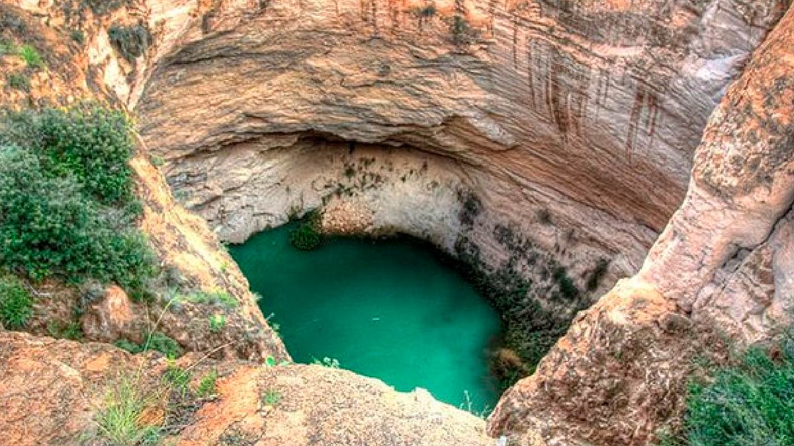

GASTRONOMIA EN GALEANA
En la región sur del estado de Nuevo León se encuentra el municipio de Galeana,
es el más grande del Estado y su nombre se debe al héroe de la independencia:
Hermenegildo Galeana. Algunos de los alimentos típicos de este municipio son los
nopalitos embotados, leche de vaca o cabra, y una gran variedad de dulces: de
leche, calabaza, chilacayote, durazno, manzana, ciruelas, higos. Pero un platillo
típico de este municipio son los chicales que no pueden faltar cuando la Semana
Santa comienza, es un platillo muy simple pero que tiene un gran sabor, tanto
campesinos que después de largas horas de trabajo hasta niños disfrutan de este
exquisito platillo en épocas de Semana Santa, pero esto no quiere decir que solo en
Semana Santa se disfrute de este platillo, en realidad está siempre presente en los
comedores de los habitantes de Galeana.
Los ingredientes para este platillo son muy pocos y muy fácil de conseguir, y el
procedimiento es muy fácil, esperemos que puedas algún día cocinar unos
deliciosos chicales, aunque lo que los hace verdaderamente únicos son las
habitantes de galena que preparan este platillo con tanta pasión y sabemos que
solo ellas pueden darles ese punto perfecto.
Para comenzar necesitas los siguientes ingredientes:
• 1 kg de granos de elote tierno (cocido y deshidratado)
• ¼ de jitomate
• 1 cebolla blanca grande
• 1 diente de ajo
• 1 manojo de cilantro
• Chile colorado, sal o caldo de pollo en polvo al gusto
• Agua potable y aceite
Ahora si veamos los pasos para preparar este platillo.
Primero debes hervir el chile colorado, junto con el diente de ajo y el jitomate a fuego
medio-alto alrededor de 5 minutos, con un tenedor o cuchillo verifica que los chiles
estén suaves y eso indica que ya están listos.
Luego pasa el chile colorado, el diente
de ajo y el jitomate ya hervidos a la licuadora y agrega un poco del agua donde los
herviste.
Después en una cazuela, arroja una cucharada de aceite y echa la cebolla
hasta que agarre una tonalidad transparente, vacía la salsa roja que licuamos y
agrega una cucharada de caldo de pollo o sal y mezcla todo.
Una vez que hayas dejado que se mezclen bien, añade los granos de elote junto con el cilantro (lavado
y desinfectado) y deja hervir por 10 minutos a fuego medio, cuando el elote esté
cocido, ¡tus chicales están listos!
NOTA: si deseas tus chicales un poco más caldudos, agrega más agua mientras
están hirviendo al final y listo.
Editor: Denisse García Espinoza.
Bibliografia
TURISMO EN GALEANA

Galeana al ser uno de los municipios más grandes del Estado, cuenta con una
infinidad de hermosos paisajes y atractivos naturales que son muy conocidos por
los habitantes del área Metropolitana y que cada fin de semana estos visitan para
apreciar un poco de la naturaleza que ofrece Galeana y pasar tiempo con sus
familias.
Uno de los atractivos que se frecuenta por los regios cuando van a pasar un rato
agradable es el “Templo de San Pablo” que pertenece al siglo XVIII y es la catedral
del pueblo, se encuentra en el centro de Galeana y aquí es donde los habitantes del
pueblo asisten a misa cada domingo.
Uno de los atractivos más visitados es la Laguna de Labradores, se pueden hacer
actividades recreativas como pesca andar en lancha. Se encuentra variedad de
especies de pescados como la carpa, trucha arco iris, bagre, mojarra y robaleta.
Otro de los famosos atractivos del municipio de Galeana es el Pozo del Gavilán, es
el más visitado por los turistas y más que nada porque es un cenote como los que
se encuentran en la península de Yucatán, pero éste está a
tan solo… ¡3 horas del área metropolitana! Tiene una
profundidad de 80 metros y un radio de 120 metros, en lo
profundo se encuentra una corriente de agua de tonalidad
azul turquesa en donde se pueden practicar varias actividades
como kayak y rappel.
Por último, tenemos el llamado “Puente de Dios”, es uno de
esos asombrosos regalos que nos da la naturaleza, pues se
formó por la acción del agua lo cual creó paredes verticales y
profundos precipicios para darle la actual forma. Cuenta con
un barandal y escaleras para poder caminar y pasar por debajo del puente y poder
admirar esta admirable obra de arte.
Podemos ver que el municipio de Galeana cuenta con pocos, pero únicos lugares
turísticos que no se ven en cualquier lado. Es un municipio muy bonito que merece
la pena visitar y tiene mucho que ofrecer, ¡esperamos que pronto puedas visitarlo!
Editor: Denisse García Espinoza.
Bibliografia
COSTUMBRES Y TRADICIONES
En Semana Santa en el municipio de Galeana se tiene una tradición que se ha
llevado desde hace más de un siglo: la Danza de los Chicaleros. Notarás que el
nombre proviene del famoso platillo que ya vimos antes.
Esta danza la llevan a cabo
los habitantes de Galeana, donde el grupo se conforma de Viejos Chicaleros y una
Vieja, que en realidad es un hombre disfrazado de mujer, y es este el personaje
principal de esta tradición, también se encuentra un “Federico” que es un monigote
hecho con trapos (en otras palabras, es un muñeco de trapo y así se les llama:
monigote) y relleno de zacate, el cual se monta en un burro. La preparación de este
ritual empieza una semana antes de que empiece Semana Santa, donde todos los
que quieran participar deben ir a inscribirse con el “Diablo mayor” y el “Juez Auxiliar”
pues estos dos son los encargados de organizar tal ritual.
Los chicaleros bailan por las calles desde el miércoles hasta el sábado de gloria
durante todo el día, la danza se basa en que se organizan en dos filas frente a frente
mientras bailan, luego hay un momento en donde la Vieja hace una imitación de los
sembradores de maíz, y los demás Viejos se colocan alrededor de ella y hacen lo
mismo, se dice que hacen esto para atraer buenas cosechas para lo que resta del
año. La música que suena es el “Pica Perica” y “El Patito” donde se utilizan
acordeones, guitarras y bajo sexto para interpretar estás armonías.
El viernes Santo, los chicaleros roban cosas de poco valor de los habitantes de
Galeana, para devolverlos el día siguiente a cambio de un aporte para la realización
de dicha fiesta. Este mismo día que se devuelven las cosas, es el último día de la
tradición, en la tarde del día la Vieja está en la búsqueda de un novio, cuando
encuentra al indicado, los viejos se lamentan por ser rechazados por la Vieja.
Cuando la Vieja ya tiene novio, se simula una boda, pero antes se quema al
Federico atándole cuetes alrededor después de haber devuelto las pertenencias
que se robaron los chicaleros de los habitantes de Galeana, para concluir con la
tradición, se lleva a cabo el festejo de la boda de la Vieja y su novio y así es como termina esta celebración.
La vestimenta de los chicaleros es usar mascaras con aspecto demoniaco para ocultar su identidad y su cuerpo lo suelen cubrir con pedazos de costal de ixtle y en su
mano derecha llevan un látigo.
La Vieja luce un vestido, peluca, medias y huaraches y ella no usa mascara, sino
una caja de cartón donde la pintan como si fuera maquillaje.
Editor: Denisse García Espinoza.>
Bibliografia